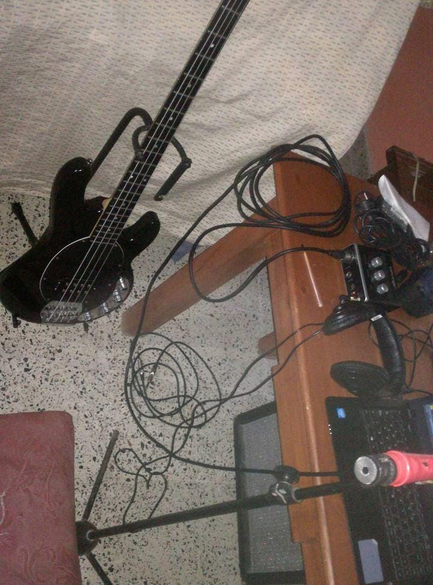
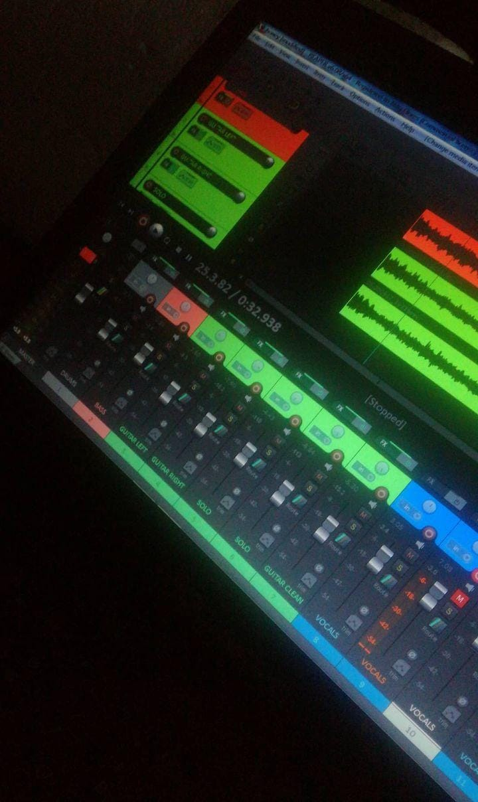

Primeros pasos

Empece con muy pocas cosas de bajos recursos. Mi primera guitarra china tipo Les Paul Standard, que modifique totalmente, quitandole el neck pickup, switch, y potenciometros dejando solamente un potenciometro de volumen para el bridge pickup. Un bajo chino de los BBB (buenos, bonitos y baratos), que eventualmente me terminaron robando, tipo musicman, de tipo activo. Una placa Behringer UM-2 que era prestada. Funcionaba bien, tenia su delay junto a mi computadora de bajos recursos. Cables que me armaba caseramente, un microfono hecho de restos de otros microfonos, envuelto con cinta aisladora rosa, reciclado hasta los cables, lo llame Frankie, Lo peor eran unos auriculares NOGA NVG-400 que le robe a mi hermano y use hasta no dar mas. Y lo que mas queria era mi pequeña notebook Compaq Presario, que tenia un procesador Celeron 1038u (Un procesador de bajisimos recursos), 4gb de Ram, un disco HDD de 500GB. Actulizando constantemente mi equipo. Si, INCREIBLE!

Empece usando reaper, ya que tenia pocos recursos monetarios. Reapere es un excelente DAW (digital audio workstation) para aprender
ademar de ser GRATIS y tener muchos plugins incorporados, facil de usar y muy simple. Unos plugins que
encontraba en la querida web, guitar rig fue un mundo nuevo
REAPER es una DAW muy respetada dentro de la industria del audio debido a su solidez, gran versatilidad
y potentes funciones disponibles. REAPER es usado por miles de profesionales alrededor del mundo y
es una de las mejores herramientas para trabajos como: Grabación multi-pista. Edición de audio.
Con el tiempo, mi primer "Gran compra" fueron estos auriculares Behringer de la gama mas baja y para mi, pasar de esos noga a estos auriculares fue un mundo totalmente difernte y hermoso, se notaba la diferencia y alentaba a querer mas... mucho mas! Respuesta en frecuencia: 20 Hz – 20 kHz Auriculares estéreo Excelente rango dinámico, Cerrados, Respuesta en frecuencia: 20 Hz – 20 kHz, Potencia máxima de entrada: 100 mW, Impedancia: 32 Ohmios, Sensibilidad: 105 dB a 1 kHz, Longitud del cable: 2 m, Conector jack estéreo de 3,5